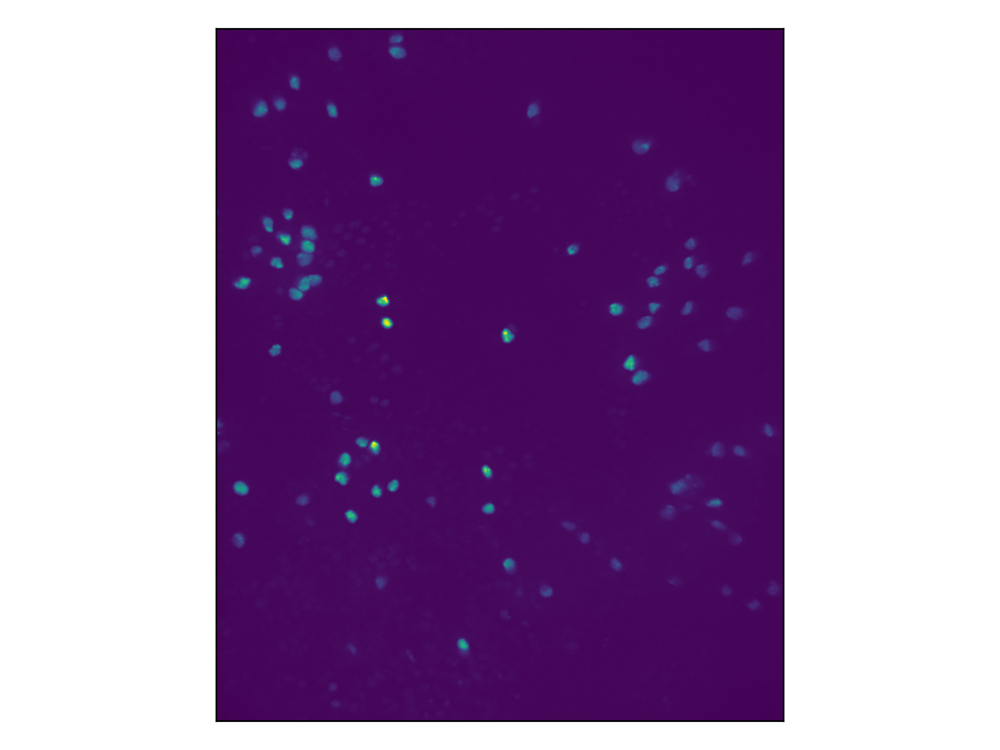
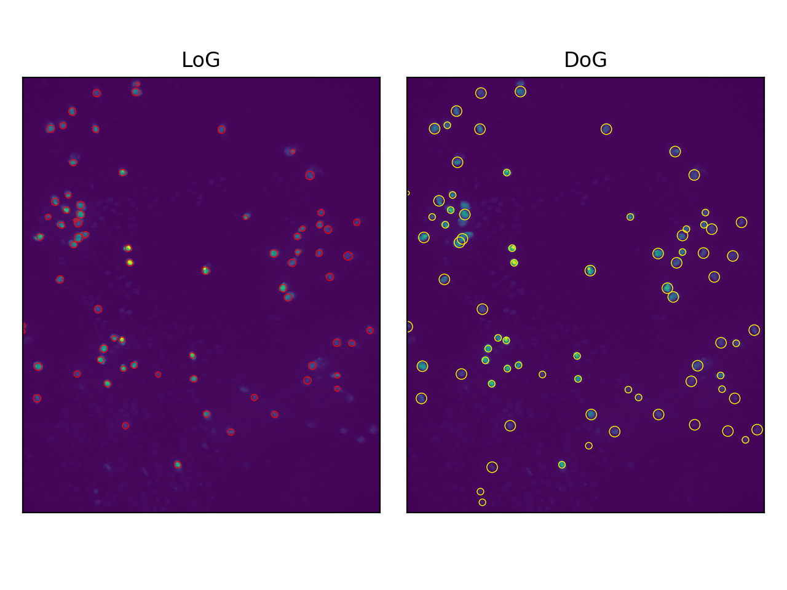

Tracking cell movement with Scikit-image and Scipy
Cell tracking, no NSA
So my masters dissertation is finally over. And while part of me never wants to hear the word fruit fly again, I thought I may as well get some of this down while it's still fresh.
Basically, my dissertation was looking into how Drosophila (fruit fly) white blood cells change their motion when you make a small wound with a laser. Kind of harsh on the poor flies, I know. If there's one thing I've learnt from this dissertation its that fruit flies really pulled the short straw when it comes to biological research. But anyway, one key part of this was looking at videos of these blood cells moving under a microscope, and tracking their position over time. This blog post is going to look at how you can do all that in Python without any fancy packages like OpenCV. All we're going to need is scikit-image and scipy (and I suppose numpy and matplotlib but who's counting).
Tracking multiple objects in time has two basic stages. First, you need to identify the positions of each object in each frame. Then you need to link the same object across frames.
Cell detection
When you look into the subject of detecting simple areas of interest in a picture, the three techniques that come up are the Laplacian of Gaussian (LoG), the Difference of Gaussian (DoG) and the Determinant of Hessian (DoH). Each works in a fairly similar way. The input image is convolved with a filter, or set of filters, and then a threshold is used to identify the coordinates of interest. I'm not going to go into any major details here because actually scikit image has some ready-made functions that implement these methods, but if you're interested you can read more about the techniques here .
Experimentation reveals that LoG and DoG are the most effective methods on this data set. Here's how you can implement that.
First lets read-in the data, which is stored as a tif file, and take a look at a single frame.
from skimage.io import imread
import matplotlib.pyplot as plt
# set the color channel and read in the frames
tif_file = '/path/to/my/tif/file.tif'
color_channel = 0
frames = imread(tif_file)[:, color_channel, :, :]
# plot the first frame
fig, ax = plt.subplots()
ax.imshow(frames[0, :, :], )
ax.set_xticks([])
ax.set_yticks([])
plt.show()

What you can see here is the nuclei of the white blood cells. This is because they have been genetically modified to contain a certain protein that emits light at a known frequency when illuminated with light of another frequency.
Next we can run the skimage function to output the coordinates of the detected blobs and plot them. We'll test both LoG and DoG.
from skimage.feature import blob_log, blob_dog
# use skimage functions to detect cell positions
LoG_cells = blob_log(frames[0, :, :], min_sigma=3, max_sigma=10, num_sigma=10, threshold=0.05)
DoG_cells = blob_dog(frames[0, :, :], min_sigma=3, max_sigma=10, threshold=0.05)
# create a figure
fig, axes = plt.subplots(nrows=1, ncols=2)
names = ['LoG', 'DoG']
colors = ['red', 'yellow']
# loop through cells and plot as circles
for i, cells in enumerate([LoG_cells, DoG_cells]):
axes[i].imshow(frames[0, :, :])
for y, x, r in cells:
c = plt.Circle((x, y), r * 2 ** 0.5, color=colors[i], linewidth=0.5, fill=False)
axes[i].add_patch(c)
axes[i].set_xticks([])
axes[i].set_yticks([])
axes[i].set_title(names[i])

Sweet. We can do this for each frame in the video file to get a list of cell coordinates in each frame.
Linking positions to form trajectories
Having detected the coordinates of each cell in each frame, the next stage is to link cells together across frames to form trajectories. In my project we implemented a modified version of the Linear Assignment Problem (LAP) approach of Jaqaman et al (2008) [1] , which has been used in cell-specific contexts with success in projects such as TrackMate . This approach formulates the task in terms of a series of particle linking problems between consecutive frames by constructing a square 'cost matrix', where the objective is to choose a single element from each column where no two elements are chosen from the same row, such that the sum of the elements is minimised.
Ok let me explain...
Consider two consecutive frames \(A\) and \(B\) for which \(n_A\) and \(n_B\) cell have been detected at 2D coordinates \([\mathbf{x}^A_1, \mathbf{x}^A_2, \dots, \mathbf{x}^{A}_{n_{A}}]\) and \([\mathbf{x}^B_1, \mathbf{x}^B_2, \dots, \mathbf{x}^{B}_{n_{B}}]\) respectively. First consider a simplified case in which \(n_A = n_B = n\) and we are certain that no cells have entered or exited the camera view, i.e. there is a one-to-one correspondence between cells in the two frames (we also exclude the possibility of splitting and merging events). For a given motion model, a cell located at position \(\mathbf{x}_{0} = (x_0, y_0)\) in frame \(A\) has a well-defined probability distribution over where it will be in the next frame, \(p(\mathbf{x}; \mathbf{x}_0)\) . One could, in principle, use any probability distribution here however one can assume simple two-dimensional Brownian motion. This means
From this we construct a square matrix \(P\) , where each element \(P_{ij}\) is the value of the probability density function for cell \(i\) from frame \(A\) moving to the position of cell \(j\) in frame \(B\) , \(p(\mathbf{x}^{B}_{j}; \mathbf{x}^{A}_i)\) .
Under the assumption that all cells move independently, the total probability of any cell link configuration will then be the product of \(n\) elements, under the condition that no column or row is selected twice. Thererfore, the most likely configuration will be the one, out of all \(n!\) possibilities, which maximises this product. This is, in essence, the linear assignment problem. The only differing detail is that the LAP is typically formulated as a sum minimisation rather than product maximisation problem, but this can be adjusted for by taking a negative element-wise logarithm of this probability matrix. Thus, the cost matrix is
However, in any two frames there are unlikely to be the exact same number of cell detections. The detection method may fail for a given cell on either frame, or a cell may move in or out of the camera's field of vision. Jaqaman et al (2008) resolve this issue by expanding the cost matrix in both directions, appending an \(n_A \times n_A\) matrix as an upper right quadrant and an \(n_B \times n_B\) matrix as a lower left quadrant, where, in both cases, the off-diagonal elements are infinite. The lower right quadrant is then the transpose of the upper left quadrant, resulting in a square \((n_A + n_B) \times (n_A + n_B)\) cost matrix.
Consider the meaning of the new LAP problem on cost matrix \(C'\) . Since the off-diagonal elements in the upper right and lower left quadrants are infinite, they cannot be chosen since this would result in infinite cost. However, selecting the diagonal element in row \(i\) from the upper right quadrant indicates that the \(i\) th cell from frame \(A\) has disappeared (due to either detection failure or moving out of the camera's field of view). Similarly, selecting the diagonal element from the lower left quadrant in column \(j\) indicates that the \(j\) th particle in frame \(B\) has just appeared, and was not present in frame \(A\) . As before, selecting element \(C'_{ij}\) in the upper left quadrant indicates that cell \(i\) from frame \(A\) has transitioned to cell \(j\) from frame \(B\) , however we no longer have the restraint that \(n_A = n_B\) . The effect of setting the lower right quadrant to the transpose of the upper left quadrant is that, by symmetry, the same transition will be selected (i.e. selections in this quadrant can be ignored).
Correcting for chain breaks
However, on any given frame the detection method may fail to identify a particular cell. This could occur for several reasons. Firstly, cells will have some small motion in the \(z\) -direction and thus may fall out of the focal range of the microscope. Additionally, during genetic modification stage, cells may have different uptakes of the Red Fluorescent Protein and thus certain cells may sit on the borderline between being detectable and undetectable. The result is that, since the previous linking procedure only considered adjacent frames, breaks may occur in the trajectories.
We can attempt to correct for this by linking trajectory stops and starts across multiple frames. This too can be achieved in terms of the LAP, by introducing a slight modification. Consider the points \(\mathbf{x}^{d}_{t}\) and \(\mathbf{x}^{b}_{t}\) representing the set of coordinates where trajectories end and begin respectively, indexed by the frame number \(t\) . We can again construct a matrix of pairwise distances in space, and also a matrix of the same shape holding the pairwise time separations, some of which will be negative. Since the standard deviation of a Brownian motion distribution scales with the square root of time, we can modify the probability density function at position \(ij\) such that it accounts for the temporal difference between stop \(i\) and start \(j\) , by multiplying \(\sigma_{s}\) by \(\sqrt{\Delta t}\) . If this difference is negative, the corresponding element of the cost matrix is automatically infinite. We can thus construct a full cost matrix as before and perform the LAP.
Putting it all together
import numpy as np
from scipy.stats import truncnorm
from scipy.spatial.distance import cdist
from scipy.optimize import linear_sum_assignment
def detect_cells(image: np.ndarray, detector: str = 'LoG', min_sigma: int = 3,
max_sigma: int = 10, num_sigma: int = 10, threshold: float = 0.05) -> np.ndarray:
"""
Detect cells either using Laplcian of Gaussians or Difference og Gaussians.
Pass an input image of pixel intensities of shape (Y, X) and return the x-y-r
coordinates of all the detected cells.
For details, see: https://scikit-image.org/docs/dev/api/skimage.feature.html#skimage.feature.blob_log
Parameters
----------
image A numpy array of shape (Y, X). This contains the raw pixel
intensity values
detector Should be one of 'LoG' or 'DoG'. Whether to use Laplacian of
Gaussians or Differnce of Gaussians.
min_sigma The minimum Gaussian width to detect cells at
max_sigma The maximum Gaussian width to detect cells at
num_sigma The number of increments between min_sigma and max_sigma
threshold The minimum value of the convolved image to identify a cell
Returns
-------
A numpy array of shape (N, 3) containing the N x-y-r coordinates of the detected cells
"""
# call the appropriate skimage function
kwargs = {'min_sigma': min_sigma, 'max_sigma': max_sigma, 'threshold': threshold}
if detector == 'LoG':
detected_cells = blob_log(image, **kwargs, num_sigma=num_sigma)
elif detector == 'DoG':
detected_cells = blob_dog(image, **kwargs)
else:
raise ValueError('the argument "detector" should be either "LoG" or "DoG"')
out = detected_cells[:, np.array([1, 0, 2])] # reorder columns so it's x-y-r
out[:, 2] = out[:, 2] * 2 ** 0.5
return out
def detect_all_cells(frames: np.ndarray, detector: str = 'LoG', min_sigma: int = 3,
max_sigma: int = 10, num_sigma: int = 10, threshold: float = 0.05) -> dict:
"""
Just repeated calls to the LoG function. Pass a block of frames and get back a dictionary
containing all cell detections in each frame.
Parameters
----------
frames A (T, Y, X) numpy array with the single-channel frames containing
the pixel intensity readins.
min_sigma The minimum Gaussian width to detect cells at
max_sigma The maximum Gaussian width to detect cells at
num_sigma The number of increments between min_sigma and max_sigma
threshold The minimum value of the convolved image to identify a cell
Returns
-------
A dictionary, indexed by frame number, containing numpy arrays with the x-y-r coordinates
of each cell in that frame.
"""
all_cells = {}
T = frames.shape[0]
time.sleep(0.1)
# loop through each frame
pbar = tqdm(range(T))
pbar.set_description('Detecting cells using {}.'.format(detector))
kwargs = {'detector': detector, 'min_sigma': min_sigma, 'max_sigma': max_sigma, 'num_sigma': num_sigma,
'threshold': threshold}
for t in pbar:
# calculate the LoG for this frame
cells = detect_cells(frames[t, :, :], **kwargs)
all_cells[t] = cells
pbar.set_description('Detecting cells using {}. Found {} cells.'.format(detector, cells.shape[0]))
return all_cells
def find_transitions(cells1: np.ndarray, cells2: np.ndarray, t_sep: int = 1) -> list:
"""
Use the Hungarian (Munkres) algorithm to output the transitions between cell
position detections in two consecutive frames. Based on the implementation
'Robust single-particle tracking in live-cell time-lapse sequences' by Jaqaman
et al, with some minor modifications.
See https://www.nature.com/articles/nmeth.1237 for details.
Parameters
----------
cells1 A numpy array of size (n1, 2) that specifies the x-y coordinated of
all the cells present in frame t
cells2 The same, for cells in frame t+t_sep, (n2, 2)
t_sep The number of frames that seperate the two frames
Returns
-------
transitions A list of all the transitions that occur between frame t and frame t+1.
Formatted as tuples, where the first element refers to the first frame
and the second element to the second frame. E.g. (2, 3) indicates that
the cell at position cells1[2, :] transitioned to the cell at position
cells2[3, :]. A cell appearing from nothing in frame 2 has a first
tuple element 'START' and a cell from frame 1 disappearing is indicated
by a second element 'END'.
e.g [(0, 1), (1, 0), ('START', 2)]
"""
# this is our seperation pdf
sig = 10 * t_sep ** 0.5
step_distribution = truncnorm(a=0, b=np.inf, loc=0, scale=sig)
# set the birth and death parameters
d = step_distribution.pdf(2 * sig)
b = step_distribution.pdf(2 * sig)
# find the number of detected cells in the t-th and t+1th frame
n_cells1, n_cells2 = cells1.shape[0], cells2.shape[0]
# this will become the matrix to perform the munkres algorithm on
matrix = np.ones((n_cells1 + n_cells2, n_cells1 + n_cells2))
# get pdf for a gaussian 2d step, at each pairwise distance
pdf_matrix = step_distribution.pdf(cdist(cells1, cells2))
# set upper left and lower right quadrant of matrix to be pdf matrix
matrix[:n_cells1, :n_cells2] = pdf_matrix
matrix[n_cells1:, n_cells2:] = pdf_matrix.T
# set upper right and lower left quadrants
matrix[:n_cells1, n_cells2:] = np.eye(n_cells1) * d
matrix[n_cells1:, :n_cells2] = np.eye(n_cells2) * b
# take logs and fix
with np.errstate(divide='ignore'):
cost_matrix = - np.log(matrix)
cost_matrix[cost_matrix == np.inf] = 1e9
# solve assignment problem
row_ind, col_ind = linear_sum_assignment(cost_matrix)
transitions = []
# interpret the output into more understandable format
for frame1_cell_no, frame2_cell_no in zip(row_ind, col_ind):
if frame2_cell_no >= n_cells2 and frame1_cell_no >= n_cells1:
# lower right quadrant: nothing interesting
pass
elif frame2_cell_no >= n_cells2:
# upper right quadrant: id1 disappeared after frame t: end of a path
transitions.append((frame1_cell_no, 'END'))
elif frame1_cell_no >= n_cells1:
# lower left quadrant: id2 appeared in frame t+1: start of a new path
transitions.append(('START', frame2_cell_no))
else:
# upper left quadrant: regular transition
transitions.append((frame1_cell_no, frame2_cell_no))
return transitions
def find_paths(cells: dict) -> list:
"""
Given a disctionary which contains numpy arrays, indexed by frame number t,
which represent the x-y-r coordinates of the cells detected in each of T frames,
find all the paths that link them together.
Parameters
----------
cells A list of (n_t, 3) or (n_t, 2) numpy arrays, with the x-y(-r)
coordinates of the cells detected in frame t.
Returns
-------
paths A list of all paths detected. Paths are represented as a numpy
array of shape (n, 3). The first column indexes the frame number,
and the second two columns hold the x and y coordinates of that
cell at that time respectively.
"""
# the number of frames present
T = len(cells)
# add a start tag to each path
transitions_list = [[('START', i) for i in range(cells[0].shape[0])]]
# find the transitions between each frame
for t in tqdm(range(T - 1), desc='Running LAP across frames'):
transitions = find_transitions(cells[t][:, :2], cells[t + 1][:, :2])
transitions_list.append(transitions)
# add ending tags to a final paths
transitions_list.append([(id2, 'END') for id1, id2 in transitions_list[-1] if id2 != 'END'])
# identify when and where paths are starting
path_starts = [(t, id2) for t in range(T) for id1, id2 in transitions_list[t] if id1 == 'START']
paths = []
# for each place that we believe a path starts, follow it through the frames
for start_time, start_index in path_starts:
# get the initial x-y coordinates of the path
path = [cells[start_time][start_index, :2]]
# initialise
previous_index = start_index
finished = False
for t in range(start_time, T):
# if we've found the end of the path, stop checking
if finished:
break
# search through transitions
transitions = transitions_list[t + 1]
for id1, id2 in transitions:
if id1 == previous_index:
# we've found the next link in the chain
if id2 != 'END':
# keep going
path.append(cells[t + 1][id2, :2])
else:
# add a new path
path = np.array(path)
t_index = np.arange(start_time, start_time + path.shape[0] - 0.1, 1)[:, None]
paths.append(np.concatenate([t_index, path], axis=1))
finished = True
previous_index = id2
break
return paths
Ok let's run it
cells = detect_all_cells(frames)
paths = find_paths(cells)
Whoopie!